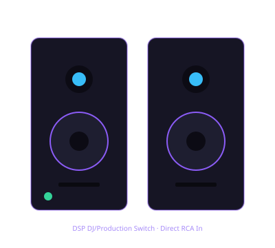

Offbeat editorial photography. Illustrative image, not a photo of the specific product.
Disclosure: This page uses affiliate links. We may earn a commission at no extra cost to you. Full disclosure →
CHOICE 01 · WHERE YOU LISTEN
Two speaker jobs. One useful decision.
A nearfield monitor is for listening close at a desk. A powered PA is for sending sound into a room. They solve different problems; wattage alone cannot tell you which one belongs in your rig.
And speakers can wait. You can learn cueing and transitions on headphones while you save for the right pair.
One controller can feed headphones and speakers separately. The master cable depends on the exact output and input jacks.
THE 30-SECOND FINDER
What does your setup need to do?
Choose the main job. You’ll get a sensible starting point, not a made-up score.
DESK PRACTICERCA-FRIENDLY PAIR
Start with a compact powered pair.
The Pioneer DJ DM-40D has RCA and 3.5 mm inputs, and the pair ships with a passive 3.5 mm-to-dual-RCA converter. That one lead covers both cases: a 3.5 mm master plugs straight in, and an RCA master uses the same lead the other way round. No extra cable is needed unless you want more length or a spare. If you want an extra 1/4-inch TRS input, compare the DM-50D too.
The Yamaha HS5 gives you XLR and 1/4-inch TRS inputs plus Room Control and High Trim switches. It is a practical fit when your controller or audio interface can feed those connections; check the cable path before ordering.
The JBL EON715 is a powered PA cabinet with a 15-inch woofer and combo inputs. This listing is one speaker, not a stereo pair or a complete event system; size the setup for the actual venue.
NO SPEAKER PURCHASE YETHEADPHONES ARE ENOUGH TO START
Keep the budget for the rest of the rig.
You can practise cueing and transitions through your controller’s headphone output. Choose a comfortable closed-back pair first, then come back to speakers when you have a clear room or gig to solve.
The output on your deck decides the lead. Pick it and the plan below names the cable, says whether it is already in the box, and prices the speakers plus that lead.
FOUR STARTING POINTS · DIFFERENT JOBS
A shortlist, not a podium.
Illustrated product references, official connection details and the compromise to check. No listening-test claims or numerical rankings.
01 · DESK PAIR≈ $149 / pair estimateYour room match

Offbeat technical illustration · not a product photo
Pioneer DJ
DM-40D
A compact active pair for a home desk and short, direct connections.
Woofer
4 in / 102 mm
Inputs
RCA · 3.5 mm
Use
Nearfield · pair
Check: the inputs are unbalanced. It is a desk monitor pair, not a portable event PA.
Price labels are Offbeat’s approximate US catalog planning estimates for October 2026, not live quotes. Confirm the current listing and whether it is for one monitor, a pair or a single PA cabinet before checkout. Product drawings are technical illustrations, not photographs.
THE CABLE IS PART OF THE PICK
Match the jacks before you buy.
A perfect speaker choice is still the wrong purchase if the controller output and speaker input do not meet cleanly. The rig planner checks the exact products and adds the missing cable to the list.
RCA master outincluded 3.5 mm converter3.5 mm input
The DM-40D box contains a passive 3.5 mm-to-dual-RCA converter, so the FLX4’s RCA master can run into the powered cabinet’s 3.5 mm input through it and no extra cable is needed. Use the master outputs, never the headphone jack. Prefer the RCA input instead? Then an ordinary dual RCA lead does the job.
For an XLR-output controller, use the appropriate XLR line to the PA’s combo input. For a stereo pair, plan a left and right feed. Connector shape alone does not guarantee a balanced signal.
Nearfield monitors are for close listening. A PA is built for room-facing sound. Don’t ask the first to do the second’s job.
02
Pair or single?
Desktop sets are commonly sold as pairs; the EON715 card above is one cabinet. Double-check the listing and unit count.
03
Exact output and input?
Write down the controller’s master jack and the speaker’s input. Use a cable intended for those two connections—not an adapter chosen by shape alone.
04
Where will they sit?
Leave room for stable placement, power and cable routing. A larger cabinet is not automatically a better desk speaker.
05
What does the venue provide?
For gigs, check the room’s PA and the event plan before buying a full portable system. Wattage is not a reliable headcount calculator.
Questions people ask before choosing
Can I learn DJing with headphones and no speakers?
Yes. A controller’s headphone cue lets you preview the next track privately. Speakers are useful when you want to hear the master in the room, but they are not a prerequisite for learning. Start with the headphone fit finder if that is the practical choice right now.
Should I buy studio monitors or a PA speaker?
Choose nearfield monitors for close desk listening and set preparation. Choose a powered PA when the setup must send sound to an audience or larger room. If you mostly practise at home, a PA is usually the wrong first upgrade; if you are gigging, check the venue plan before assuming one cabinet will cover it.
How many speakers do I need?
A desktop monitor pair is two speakers sold together. PA quantity depends on the room, coverage, stereo needs, other equipment and event plan. A single powered cabinet can make sense in some setups, but it is not automatically a complete stereo or event system.
Does an XLR or TRS cable make an RCA output balanced?
No. A cable can connect different jack types, but it does not convert an unbalanced signal into a balanced one. A fully balanced path requires compatible balanced output and input stages, with correctly wired cable. See the connection guide for examples.
HOW TO USE THIS PAGE
Specs from the maker. No invented listening scores.
Connection details and product dimensions above are drawn from manufacturer pages. This guide does not claim hands-on sound tests, measured room coverage or a lab ranking. Prices are planning estimates only; check each retailer listing for the unit count and current price.